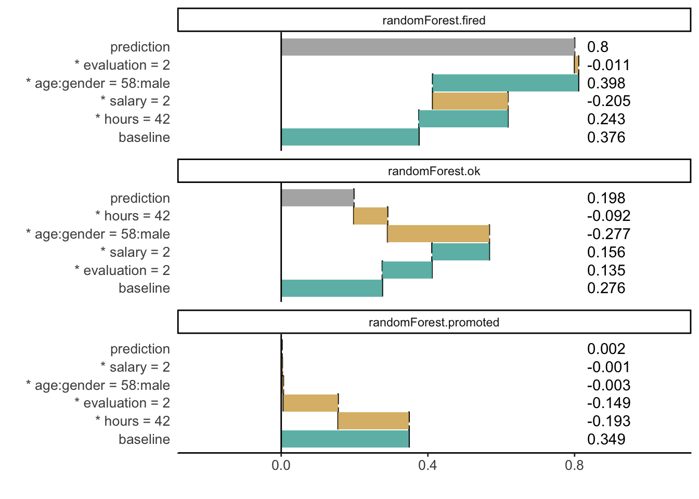

Chapter 4 Variable attribution for linear models
4.1 Introduction
In this chapter we introduce the concept and the intuitions underlying ,,variable attribution,’’ i.e., the decomposition of the difference between the single-instance and the average model predictions among the different explanatory variables. We can think about the following examples:
- Assume that we are interested in predicting the risk of heart attack based on person’s age, sex, and smoking habits. A patient may want to know which factors have the highest impact on the his/her risk score.
- Consider a model for prediction of apartment prices. An investor may want to know how much of the predicted price may be attributed to, for instance, the location of an apartment.
- Consider a model for credit scoring. A customer may want to know if factors like gender, age, or number of children influence model predictions.
In each of those cases we want to attribute a part of the model prediction to a single explanatory variable. This can be done directly for linear models. Hence, in this chapter We focus on those models. The method can be easily extended to generalized linear models. Model-agnostic approaches will be presented in Chapters 6 and 8.
4.2 Intuition
Assume a linear model with \(p\) explanatory variables collected in the vector \(x = (x_1, x_2, \ldots, x_p)\) and coefficients \(\beta = (\beta_0, \beta_1, .., \beta_p)\), where \(\beta_0\) is the intercept. The prediction is given by the following linear combination:
\[ f(x) = \beta_0 + x_1 \beta_1 + \ldots + x_p \beta_p. \]
We are interested in the contribution of variable \(x_i\) on model prediction \(f(x^*)\) for a single observation described by \(x^*\). In this case, the contribution is related to \(x^*_i\beta_i\), as variable \(x_i\) occurs only in this term. As it will become clear in the sequel, it is easier to interpret the variable’s contribution if \(x_i\) is is centered by subtracting a constant \(\hat x_i\) (usually, the mean of \(x_i\)). This leads the following, intuitive formula for the variable attribution: \[ v(f, x^*, i) = \beta_i (x_i^* - \hat x_i). \]
4.3 Method
We want to calculate \(v(f, x^*, i)\), which is the contribution of variable \(x_i\) on prediction of model \(f()\) in point \(x^*\).
Geneal approach for calculation of variable attributions would be to measure how much the expected model response would change after conditioning on \(x_i = x_i^*\).
\[ v(f, x^*, i) = E[f(x) | x_i = x_i^*] - E[f(x)] \]
For linear models, if coordinates of \(x\) are independent, this is equivalent of
\[
v(f, x^*, i) = f(x^*) - E[f(x)|x_{-i} = x^*_{-i}] = \beta_i x^*_i - E \beta_i X_i.
\]
Expected value can be estimated as averages, and this leads to
\[
v(f, x^*, i) = \beta_i x^*_i - \beta_i \bar x_i = \beta_i (x^*_i - \bar x_i)
\]
The logic behind the attribution is the following. Contribution of variable \(x_i\) is the difference between model response for value \(x_i^*\) minus the average model response.
Note that the linear model ma be rewritten in a following way
\[ f(x) = baseline + (x_1 - \bar x_1) \beta_1 + ... + (x_p - \bar x_p) \beta_p \]
where \[ baseline = \mu + \bar x_1 \beta_1 + ... + \bar x_p \beta_p. \]
Here \(baseline\) is an average model response and variable contributions show how prediction for particular \(x^*\) is different from the average response.
** NOTE for careful readers **
There is a gap between expected value of \(X_i\) and average calculated on some dataset \(\bar x_i\). The latter depends on the data used for calculation of averages. For the sake of simplicity we do not emphasize these differences. To live with this just assume that we have access to a very large validation data that allows us to calculate \(\bar x_i\) very accurately.
Also we assumed that coordinated of \(x\) are independent, which may not be the case. We will return to this problem later, during the discussion related to interactions.
4.4 Example: Wine quality
It may be a surprise, that the attribution for variable \(x_i\) is not the \(\beta_i x_i\). To understand this, consider following example.

(#fig:attribution1_old)(fig:attribution1_old)Relation between wine quality and concentration of alcohol assessed with linear model
Figure 5.1 shows the relation between alcohol and wine quality, based on the wine dataset (Cortez et al. 2009). The corresponding linear model is
\[ quality(alcohol) = 2.5820 + 0.3135 * alcohol \]
The weakest wine in this dataset has 8% of alcohol, average alcohol concentration is 10.51, so the contribution of alcohol to the model prediction is \(0.3135 *(8-10.51) = -0.786885\). It means that low value of alcohol for this wine (8%) lower the prediction of quality by \(-0.786885\).
Note, that it would be confusing to use \(x_i\beta_i\) as alcohol contribution on quality would be \(0.3135*8 = 2.508\). This would not reflect the intuition that for positive relation, the smaller is the alcohol concentration the lower should be the quality of wine.
4.5 Pros and Cons
Here we summarise pros and cons of this approach.
Pros
- Presented variable attribution for linear model is not an approximation, it is directly linked with the structure of a model.
- It is easier to understand attributions that are not linked with scale nor location of \(x_i\) as the standard \(\beta_i\) are.
Cons
- It works only for linear models.
- This do not reduce model complexity. Just present model coefficients in a different way.
4.6 Code snippets
Variable attributions for linear models may be directly extracted from the predict() function for linear models.
In this section we will present an example for logistic regression based on the HR dataset. See the Section 19.1 for more details.
First we build a logistic regression model for binary variable status == "fired". Here are fitted model coefficients.
library("DALEX")
model_fired <- glm(status == "fired" ~ ., data = HR, family = "binomial")
coef(model_fired)## (Intercept) gendermale age hours evaluation
## 5.737945729 -0.066803609 -0.001503314 -0.102021120 -0.425793369
## salary
## -0.015740080We want to calculate variable attributions for a particular point. Here we define this point.
new_observation <- data.frame(gender = factor("male", levels = c("male", "female")),
age = 57.7,
hours = 42.3,
evaluation = 2,
salary = 2)For linear and generalized linear models we may specify argument type = "terms" that extracts variable contributions.
## gender age hours evaluation salary
## 1 -0.03361889 -0.02660691 0.7555555 0.5547197 0.007287334
## attr(,"constant")
## [1] -0.8714962Below we show how to do this with the DALEX package. Additionaly we may easily plot contributions.
library("DALEX")
explainer_fired <- explain(model_fired,
data = HR,
y = HR$status == "fired",
label = "fired")
attribution <- single_prediction(explainer_fired, new_observation)
attribution## variable contribution variable_name variable_value
## 1 (Intercept) 0.363833312 Intercept 1
## hours + hours = 42.3 0.109221944 hours 42.3
## evaluation + evaluation = 2 0.134863451 evaluation 2
## salary + salary = 2 0.001751398 salary 2
## age + age = 57.7 -0.006343784 age 57.7
## gender + gender = male -0.008045314 gender male
## 11 final_prognosis 0.595281007
## cummulative sign position label
## 1 0.3638333 1 1 fired
## hours 0.4730553 1 2 fired
## evaluation 0.6079187 1 3 fired
## salary 0.6096701 1 4 fired
## age 0.6033263 -1 5 fired
## gender 0.5952810 -1 6 fired
## 11 0.5952810 X 7 fired
References
Cortez, Paulo, António Cerdeira, Fernando Almeida, Telmo Matos, and José Reis. 2009. “Modeling Wine Preferences by Data Mining from Physicochemical Properties.” Decision Support Systems 47 (4): 547–53. https://doi.org/10.1016/j.dss.2009.05.016.